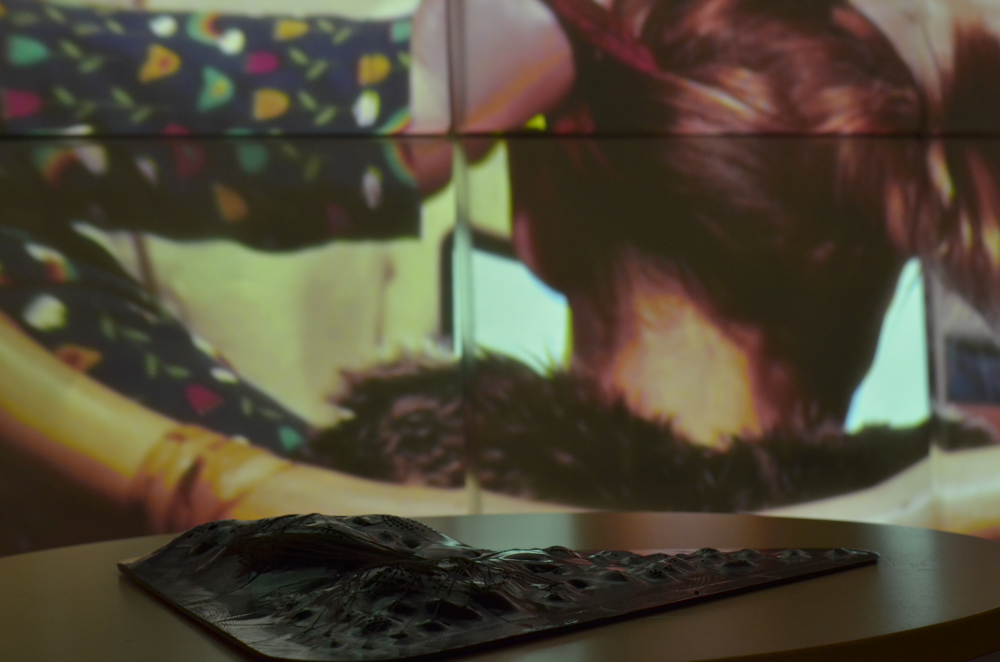

re|Traces of Search
The software art installation ’re|Traces of Search’ probes human-software relationships by examining in detail a specific and situated action: searching on the web.
This work exposes the inner workings of this human/non-human connection; the software - the keystrokes, the scripts and function calls occurring during the exchange - are revealed as a tangible artifact and interactive sonification. We invite guests to explore this non-human representation and touch the software, as it touches us back. As well as highlighting a hidden complexity, this work touches upon questions of transparency and privacy of search engines, and to what extent our relationship with software is rooted in control, in contrast to care.

This work is licensed under a Creative Commons Attribution 4.0 International License.